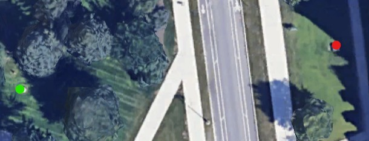

Stats
Par: 13
Distance: 168 ft
Hole Description
This hole is another reverse concrete rule hole, meaning if the frisbee lands on grass it must be thrown upside down, and if the frisbee lands on concrete it can be thrown right side up. Starting from standing on the rock from last hole, the target is the UVM boulder accross the road in front of old mill.
Map key: green dot starting box, red dot target, blue dot mandatory.